45. 高级整合#
关键要点
当来自不同模态（如 RNA-seq、ATAC-seq 和 ADT）的数据来自各自独立的实验、而非在每个细胞上联合测量时，先进的多模态整合技术尤其有用。
查询到参考的映射可以把新数据整合到一个已有的参考框架中，从而支持细胞类型预测、缺失模态插补（例如从 RNA-seq 数据预测蛋白丰度）等任务。
环境设置
安装 conda:
在创建环境之前，请确保 conda 已安装在您的系统中。
保存 yml 内容:
将 yml 选项卡中的内容复制到名为
environment.yml的文件中。
创建环境:
打开终端或命令提示符。
运行以下命令：
conda env create -f environment.yml
激活环境:
创建好环境后，使用以下命令激活它：
conda activate <environment_name>
替换
<environment_name>，名称就是在environment.yml文件中指定的那个。在 yml 文件里，它看起来像这样：name: <environment_name>
验证安装:
通过运行以下命令，检查环境是否创建成功：
conda env list
name: advanced-integration
channels:
- conda-forge
- bioconda
- defaults
dependencies:
- conda-forge::python=3.12.11
- conda-forge::scanpy=1.11.5
- conda-forge::r-base=4.4
- conda-forge::r-seurat=5.1
- conda-forge::r-remotes
- conda-forge::r-devtools
- bioconda::bioconductor-singlecellexperiment
- conda-forge::rpy2=3.6
- bioconda::anndata2ri=1.3
- conda-forge::r-spatstat
- conda-forge::pytorch-cpu
- conda-forge::pip
- pip:
- scvi-tools==1.4.1
- git+https://github.com/theislab/multigrate.git@main
- scglue==0.4.0
45.1. 动机#
在本笔记本中，我们展示用于多模态整合的更高级方法和技术。这类高级技术的例子包括未配对整合、部分重叠数据的整合，或多模态的查询到参考映射。当各模态的测量并非在每个细胞上联合进行、而是来自不同实验时，这些方法尤其有用。
我们将在下文相应的小节中更详细地讨论每一种情形。
45.2. 环境设置#
import logging
import anndata
import anndata2ri
import multigrate as mtg
import networkx as nx
import numpy as np
import pandas as pd
import rpy2.rinterface_lib.callbacks
import scanpy as sc
import scglue
from rpy2.robjects import pandas2ri, r
from scvi.model import TOTALVI
rpy2.rinterface_lib.callbacks.logger.setLevel(logging.ERROR)
pandas2ri.activate()
anndata2ri.activate()
%load_ext rpy2.ipython
import warnings
warnings.filterwarnings("ignore")
Global seed set to 0
/lustre/groups/ml01/workspace/anastasia.litinetskaya/miniconda3/envs/advanced-integration/lib/python3.9/site-packages/pytorch_lightning/utilities/warnings.py:53: LightningDeprecationWarning: pytorch_lightning.utilities.warnings.rank_zero_deprecation has been deprecated in v1.6 and will be removed in v1.8. Use the equivalent function from the pytorch_lightning.utilities.rank_zero module instead.
new_rank_zero_deprecation(
/lustre/groups/ml01/workspace/anastasia.litinetskaya/miniconda3/envs/advanced-integration/lib/python3.9/site-packages/pytorch_lightning/utilities/warnings.py:58: LightningDeprecationWarning: The `pytorch_lightning.loggers.base.rank_zero_experiment` is deprecated in v1.7 and will be removed in v1.9. Please use `pytorch_lightning.loggers.logger.rank_zero_experiment` instead.
return new_rank_zero_deprecation(*args, **kwargs)
During startup - Warning message:
Setting LC_CTYPE failed, using "C"
如果你想运行 Seurat 的桥接整合，请另外用以下方式单独安装 Seurat 包的开发版本： remotes::install_github("satijalab/seurat", "feat/dictionary", quiet = TRUE) 或 devtools::install_github("https://github.com/satijalab/seurat/tree/feat/dictionary") 命令。
%%R
suppressPackageStartupMessages({
library(SingleCellExperiment)
library(Seurat)
})
set.seed(123)
WARNING: The R package "reticulate" only fixed recently
an issue that caused a segfault when used with rpy2:
https://github.com/rstudio/reticulate/pull/1188
Make sure that you use a version of that package that includes
the fix.
45.3. 准备数据#
我们继续使用来自 NeurIPS 2021 单细胞竞赛的 Multiome 和 CITE-seq 数据 [Luecken et al., 2021].
我们需要：
来自 multiome 的 RNA-seq 部分，以及来自 CITE-seq 数据的 ADT，用于以下工具的未配对整合 GLUE
来自 CITE-seq 数据的配对基因表达和蛋白，用于以下工具的查询到参考映射 totalVI
来自 CITE-seq 数据的 RNA-seq 查询，用于以下工具的查询映射 Seurat v4
CITE-seq 数据，用于桥接映射
NeurIPS multiome 和 NeurIPS CITE-seq，用于以下工具的三模态整合与查询到参考映射 multigrate
由于我们要演示某些方法的查询到参考映射功能，我们把数据分成参考集和查询集。对于只用于整合的方法，我们也使用参考批次。
我们注意到，Multiome 和 CITE-seq 数据的批次名称相同，但它们实际上并不是同一批细胞。
cite_reference_batches = [
"s1d1",
"s1d2",
"s1d3",
] # need for totalVI, multigrate and bridge (RNA part)
multiome_reference_batches = ["s1d1", "s1d2", "s1d3"] # need for GLUE and multigrate
cite_query_batches = ["s2d1", "s2d4"] # need for totalVI, multigrate and bridge
multiome_query_batches = ["s2d1", "s2d4"] # need for multigrate
rna_multiome = sc.read(
"/lustre/groups/ml01/workspace/anastasia.litinetskaya/data/neurips-multiome/rna_hvg.h5ad"
)
rna_multiome
AnnData object with n_obs × n_vars = 69249 × 4000
obs: 'GEX_pct_counts_mt', 'GEX_n_counts', 'GEX_n_genes', 'GEX_size_factors', 'GEX_phase', 'ATAC_nCount_peaks', 'ATAC_atac_fragments', 'ATAC_reads_in_peaks_frac', 'ATAC_blacklist_fraction', 'ATAC_nucleosome_signal', 'cell_type', 'batch', 'ATAC_pseudotime_order', 'GEX_pseudotime_order', 'Samplename', 'Site', 'DonorNumber', 'Modality', 'VendorLot', 'DonorID', 'DonorAge', 'DonorBMI', 'DonorBloodType', 'DonorRace', 'Ethnicity', 'DonorGender', 'QCMeds', 'DonorSmoker'
var: 'feature_types', 'gene_id', 'highly_variable', 'means', 'dispersions', 'dispersions_norm'
uns: 'ATAC_gene_activity_var_names', 'Site_colors', 'batch_colors', 'cell_type_colors', 'dataset_id', 'genome', 'hvg', 'organism'
obsm: 'ATAC_gene_activity', 'ATAC_lsi_full', 'ATAC_lsi_red', 'ATAC_umap', 'GEX_X_pca', 'GEX_X_umap', 'X_umap'
layers: 'counts'
atac_multiome = sc.read(
"/lustre/groups/ml01/workspace/anastasia.litinetskaya/data/trimodal_neurips/atac_hvf_muon.h5ad"
)
atac_multiome
AnnData object with n_obs × n_vars = 69249 × 20000
obs: 'GEX_pct_counts_mt', 'GEX_n_counts', 'GEX_n_genes', 'GEX_size_factors', 'GEX_phase', 'ATAC_nCount_peaks', 'ATAC_atac_fragments', 'ATAC_reads_in_peaks_frac', 'ATAC_blacklist_fraction', 'ATAC_nucleosome_signal', 'cell_type', 'batch', 'ATAC_pseudotime_order', 'GEX_pseudotime_order', 'Samplename', 'Site', 'DonorNumber', 'Modality', 'VendorLot', 'DonorID', 'DonorAge', 'DonorBMI', 'DonorBloodType', 'DonorRace', 'Ethnicity', 'DonorGender', 'QCMeds', 'DonorSmoker', 'technology', 'cell_type_l2', 'cell_type_l1', 'cell_type_l3', 'assay', 'split'
var: 'feature_types', 'gene_id', 'highly_variable', 'means', 'dispersions', 'dispersions_norm'
uns: 'ATAC_gene_activity_var_names', 'dataset_id', 'genome', 'hvg', 'log1p', 'organism'
obsm: 'ATAC_gene_activity', 'ATAC_lsi_full', 'ATAC_lsi_red', 'ATAC_umap', 'GEX_X_pca', 'GEX_X_umap'
layers: 'binary', 'counts', 'cpm', 'tf-idf-binary', 'tf-idf-counts'
rna_cite = sc.read(
"/lustre/groups/ml01/workspace/anastasia.litinetskaya/data/neurips-cite/rna_hvg.h5ad"
)
rna_cite
AnnData object with n_obs × n_vars = 90261 × 4000
obs: 'GEX_n_genes_by_counts', 'GEX_pct_counts_mt', 'GEX_size_factors', 'GEX_phase', 'ADT_n_antibodies_by_counts', 'ADT_total_counts', 'ADT_iso_count', 'cell_type', 'batch', 'ADT_pseudotime_order', 'GEX_pseudotime_order', 'Samplename', 'Site', 'DonorNumber', 'Modality', 'VendorLot', 'DonorID', 'DonorAge', 'DonorBMI', 'DonorBloodType', 'DonorRace', 'Ethnicity', 'DonorGender', 'QCMeds', 'DonorSmoker', 'is_train'
var: 'feature_types', 'gene_id', 'highly_variable', 'means', 'dispersions', 'dispersions_norm'
uns: 'dataset_id', 'genome', 'hvg', 'organism'
obsm: 'ADT_X_pca', 'ADT_X_umap', 'ADT_isotype_controls', 'GEX_X_pca', 'GEX_X_umap'
layers: 'counts'
adt_cite = sc.read("/lustre/groups/ml01/workspace/daniel.strobl/neurips_cite_pp.h5ad")
adt_cite
AnnData object with n_obs × n_vars = 120502 × 136
obs: 'donor', 'batch', 'n_genes_by_counts', 'log1p_n_genes_by_counts', 'total_counts', 'log1p_total_counts', 'n_counts', 'outliers'
var: 'gene_ids', 'feature_types', 'n_cells_by_counts', 'mean_counts', 'log1p_mean_counts', 'pct_dropout_by_counts', 'total_counts', 'log1p_total_counts'
uns: 'batch_colors', 'donor_colors', 'neighbors', 'pca', 'umap'
obsm: 'X_isotypes', 'X_pca', 'X_pcahm', 'X_umap'
varm: 'PCs'
layers: 'counts'
obsp: 'connectivities', 'distances'
存在一些差异 .obs_names ——这是 CITE-seq 数据中 RNA 和 ADT 的相应字段，所以我们对它们进行更新，以确保它们在各模态之间对齐。
rna_cite.obs_names
Index(['GCATTAGCATAAGCGG-1-s1d1', 'TACAGGTGTTAGAGTA-1-s1d1',
'AGGATCTAGGTCTACT-1-s1d1', 'GTAGAAAGTGACACAG-1-s1d1',
'TCCGAAAAGGATCATA-1-s1d1', 'CTCCCAATCCATTGGA-1-s1d1',
'GACCAATCAATTTCGG-1-s1d1', 'TTCCGGTAGTTGTAAG-1-s1d1',
'ACCTGTCAGGACTGGT-1-s1d1', 'TTCGATTTCAGGACAG-1-s1d1',
...
'TCTTCCTAGCCAACCC-1-s4d9', 'TTCCACGGTTGAGGAC-1-s4d9',
'ATTCCTAGTCCAAGAG-1-s4d9', 'GCGGAAAGTACGCGTC-1-s4d9',
'TAACTTCAGATACAGT-1-s4d9', 'GAATCACCACGGAAGT-1-s4d9',
'GCTGGGTGTACGGATG-1-s4d9', 'TCGAAGTGTGACAGGT-1-s4d9',
'GCAGGCTGTTGCATAC-1-s4d9', 'ACGTAACAGGTCTACT-1-s4d9'],
dtype='object', length=90261)
adt_cite.obs_names
Index(['AAACCCAAGGATGGCT-1-0-0-0-0-0-0-0-0-0-0-0',
'AAACCCAAGGCCTAGA-1-0-0-0-0-0-0-0-0-0-0-0',
'AAACCCAAGTGAGTGC-1-0-0-0-0-0-0-0-0-0-0-0',
'AAACCCACAAGAGGCT-1-0-0-0-0-0-0-0-0-0-0-0',
'AAACCCACATCGTGGC-1-0-0-0-0-0-0-0-0-0-0-0',
'AAACCCACATTCTCTA-1-0-0-0-0-0-0-0-0-0-0-0',
'AAACCCAGTCCGCAGT-1-0-0-0-0-0-0-0-0-0-0-0',
'AAACCCAGTGCATACT-1-0-0-0-0-0-0-0-0-0-0-0',
'AAACCCAGTTGACGGA-1-0-0-0-0-0-0-0-0-0-0-0',
'AAACCCATCGATACTG-1-0-0-0-0-0-0-0-0-0-0-0',
...
'TTTGGTTGTCGTACTA-1-1', 'TTTGGTTTCACCTCGT-1-1', 'TTTGGTTTCGAGAACG-1-1',
'TTTGGTTTCGATACGT-1-1', 'TTTGTTGGTAGCTTTG-1-1', 'TTTGTTGGTCCAATCA-1-1',
'TTTGTTGGTGACTAAA-1-1', 'TTTGTTGTCCCTCTCC-1-1', 'TTTGTTGTCTAGAGCT-1-1',
'TTTGTTGTCTCTGCCA-1-1'],
dtype='object', length=120502)
adt_cite.obs_names = [
name.split("-")[0] + "-" + name.split("-")[1] + "-" + batch
for batch, name in zip(adt_cite.obs["donor"], adt_cite.obs_names, strict=False)
]
我们取两种模态中都存在的细胞作为子集。
common_idx = list(set(rna_cite.obs_names).intersection(set(adt_cite.obs_names)))
rna_cite = rna_cite[common_idx].copy()
adt_cite = adt_cite[common_idx].copy()
我们还将一些元数据从 RNA 复制到 ADT。
adt_cite.obs = adt_cite.obs.join(rna_cite.obs[["Samplename", "cell_type"]])
我们还要确保 multiome 数据中的细胞是相同的。
assert np.sum(rna_multiome.obs_names != atac_multiome.obs_names) == 0
由于不同模态和数据集的批次名称相同，我们需要更新其中的一批 batch 列，位置在 .obs 因此，我们为此创建了一个辅助函数。
def update_obs_column(
adata, obs_column_name, suffix, how="right", new_obs_column_name=None
):
if new_obs_column_name is None:
new_obs_column_name = f"new_{obs_column_name}"
# otherwise can't use + operator with categorical columns
adata.obs[obs_column_name] = adata.obs[obs_column_name].astype("str").copy()
# create new column in .obs
if how == "right":
adata.obs[new_obs_column_name] = f"_{suffix}"
adata.obs[new_obs_column_name] = (
adata.obs[obs_column_name] + adata.obs[new_obs_column_name]
)
else:
adata.obs[new_obs_column_name] = f"{suffix}_"
adata.obs[new_obs_column_name] = (
adata.obs[new_obs_column_name] + adata.obs[obs_column_name]
)
return adata
rna_multiome = update_obs_column(rna_multiome, "batch", "_rna_multiome")
atac_multiome = update_obs_column(atac_multiome, "batch", "_atac_multiome")
rna_cite = update_obs_column(rna_cite, "batch", "_rna_cite")
adt_cite = update_obs_column(adt_cite, "donor", "_adt_cite", "batch")
最后，我们把参考数据集和查询都取到正确的批次上。
# query
rna_multiome_query = rna_multiome[
rna_multiome.obs["batch"].isin(multiome_query_batches)
].copy()
atac_multiome_query = atac_multiome[
atac_multiome.obs["batch"].isin(multiome_query_batches)
].copy()
rna_cite_query = rna_cite[rna_cite.obs["batch"].isin(cite_query_batches)].copy()
adt_cite_query = adt_cite[adt_cite.obs["donor"].isin(cite_query_batches)].copy()
# reference
rna_multiome = rna_multiome[
rna_multiome.obs["batch"].isin(multiome_reference_batches)
].copy()
atac_multiome = atac_multiome[
atac_multiome.obs["batch"].isin(multiome_reference_batches)
].copy()
rna_cite = rna_cite[rna_cite.obs["batch"].isin(cite_reference_batches)].copy()
adt_cite = adt_cite[adt_cite.obs["donor"].isin(cite_reference_batches)].copy()
45.4. 基于图链接统一嵌入（GLUE）的未配对整合#
与我们前面演示的配对整合不同，也可以进行完全未配对的整合。在这种情况下，细胞条形码或特征都没有交集。因此，我们需要一些先验知识来把不同的模态联系起来。
GLUE [Cao and Gao, 2022] 是一种用于未配对整合的深度学习模型，它利用一个调控图来帮助连接来自不同模态的特征。该模型基于条件变分自编码器：模型学习重建数据，同时允许进行批次校正。为了引导整合，GLUE 利用一个先验知识图，为每种模态的每个特征学习一个嵌入。我们演示如何用 GLUE 整合未配对的 RNA 和 ADT 数据——使用来自 NeurIPS 竞赛的 Multiome 数据的 RNA 部分和 CITE-seq 数据的 ADT 部分（https://openproblems.bio/neurips_2021/）。为构建这张图，我们把 RNA 模态的节点与 ADT 模态的节点相连，当且仅当该 RNA 节点是 ADT 模态中某个给定蛋白的蛋白编码基因时才连。GLUE 模型的输出是每个细胞在共享潜在空间中的一种表示。
我们建议读者参阅 GLUE 教程，了解如何用 GLUE 整合未配对的 RNA 和 ATAC，以及该模型的更多细节 https://scglue.readthedocs.io/en/latest/tutorials.html.
我们按照 GLUE 教程来预处理 RNA-seq：对原始计数做对数归一化、标准化（scale），并计算 PCA。
rna_multiome.X = rna_multiome.layers["counts"].copy()
sc.pp.normalize_total(rna_multiome)
sc.pp.log1p(rna_multiome)
sc.pp.scale(rna_multiome)
sc.tl.pca(rna_multiome, n_comps=100, svd_solver="auto")
对于 ADT 计数，我们使用来自以下位置的 CLR 归一化计数： .X 以及在归一化值上计算得到的 PCA。
np.max(adt_cite.X)
69.27085
sc.tl.pca(adt_cite, n_comps=100, svd_solver="auto")
我们需要确保蛋白编码基因名和相应的蛋白名在两个数据对象中保持一致。稍后构建图时会用到这一点。
rename_proteins = {
"CD103": "ITGAE",
"CD11b": "ITGAM",
"CD11c": "ITGAX",
"CD122": "IL2RB",
"CD124": "IL4R",
"CD127": "IL7R",
"CD13": "ANPEP",
"CD137": "TNFRSF9",
"CD152": "CTLA4",
"CD154": "CD40LG",
"CD16": "FCGR3A",
"CD161": "KLRB1",
"CD185": "CXCR5",
"CD194": "CCR4",
"CD196": "CCR6",
"CD20": "MS4A1",
"CD21": "CR2",
"CD23": "FCER2",
"CD25": "IL2RA",
"CD26": "DPP4",
"CD268": "TNFRSF13C",
"CD272": "BTLA",
"CD278": "ICOS",
"CD29": "ITGB1",
"CD3": "CD3G",
"CD303": "CLEC4C",
"CD304": "NRP1",
"CD314": "KLRK1",
"CD319": "SLAMF7",
"CD335": "NCR1",
"CD35": "CR1",
"CD352": "SLAMF6",
"CD39": "ENTPD1",
"CD49a": "ITGA1",
"CD49f": "ITGA6",
"CD54": "ICAM1",
"CD56": "NCAM1",
"CD62L": "SELL",
"CD71": "TFRC",
"CD73": "NT5E",
"CD79b": "CD79B",
"CD8": "CD8A",
"CD85j": "LILRB1",
"CD88": "C5AR1",
"CD94": "KLRD1",
"CD95": "FAS",
"HLA-DR": "HLA-DRA",
"IgD": "IGHD",
"IgM": "IGHM",
"TCR": "TRAC",
}
adt_cite.var_names = [
rename_proteins[name] if name in rename_proteins else name
for name in adt_cite.var_names
]
45.4.1. 图的构建#
在运行 GLUE 整合之前，我们需要构建一张图，其中包含关于两种模态的特征如何相连的先验知识。节点集必须是所有模态特征的并集，边权重必须在 0 到 1 之间。为了把 ADT 与 RNA 整合，我们这样构建图：如果蛋白名与基因名相同，就把边权重设为 1，所有其他边设为 0。
p = np.array(adt_cite.var_names)
r = np.array(rna_multiome.var_names) # noqa F811
# mask entries are set to 1 where protein name is the same as gene name
mask = np.repeat(p.reshape(-1, 1), r.shape[0], axis=1) == r
mask = np.array(mask)
我们重命名这些特征，使 ADT 和 RNA 模态的特征互不相同。
rna_vars = [v + "_rna" for v in rna_multiome.var_names]
prot_vars = [v + "_prot" for v in adt_cite.var_names]
rna_multiome.var_names = rna_vars
adt_cite.var_names = prot_vars
GLUE 还要求每个节点都有一个权重为 1 的自环（self-loop），所以我们在这里也加上它们。
adj = pd.DataFrame(mask, index=prot_vars, columns=rna_vars)
diag_edges = adj[adj > 0].stack().index.tolist()
diag_edges = [(n1, n2, {"weight": 1.0, "sign": 1}) for n1, n2 in diag_edges]
self_loop_rna = [(g, g, {"weight": 1.0, "sign": 1}) for g in rna_vars]
self_loop_prot = [(g, g, {"weight": 1.0, "sign": 1}) for g in prot_vars]
接下来我们构建实际的图对象。
graph = nx.Graph()
graph.add_nodes_from(rna_vars)
graph.add_nodes_from(prot_vars)
graph.add_edges_from(diag_edges)
graph.add_edges_from(self_loop_prot)
graph.add_edges_from(self_loop_rna)
我们得到一张有 4136 个节点的图，对应 4000 个基因和 136 个蛋白。我们还有 4186 条非零权重的边：4136 个自环，以及 50 条同名基因与蛋白之间的连接。
graph.number_of_nodes(), graph.number_of_edges()
(4136, 4186)
45.4.2. 配置数据#
在本节中，我们再次按照 GLUE 教程来配置模型。首先，我们设置 RNA 的编码器-解码器对，让它学习重建我们假设服从 NB 分布的原始计数。我们指定在编码器中使用 PCA 嵌入。
scglue.models.configure_dataset(
rna_multiome,
"NB",
use_highly_variable=False,
use_batch="Samplename",
use_layer="counts",
use_rep="X_pca",
)
接下来，我们设置 ADT 的编码器和解码器，让它重建服从正态分布的归一化计数，并使用 PCA 嵌入。
scglue.models.configure_dataset(
adt_cite,
"Normal",
use_highly_variable=False,
use_batch="Samplename",
use_rep="X_pca",
)
我们初始化并训练最终的模型。
glue = scglue.models.fit_SCGLUE(
{"rna": rna_multiome, "adt": adt_cite},
graph,
)
[INFO] fit_SCGLUE: Pretraining SCGLUE model...
[INFO] autodevice: Using GPU 0 as computation device.
[INFO] check_graph: Checking variable coverage...
[INFO] check_graph: Checking edge attributes...
[INFO] check_graph: Checking self-loops...
[INFO] check_graph: Checking graph symmetry...
[INFO] check_graph: All checks passed!
[INFO] SCGLUEModel: Setting `graph_batch_size` = 1457
[INFO] SCGLUEModel: Setting `max_epochs` = 102
[INFO] SCGLUEModel: Setting `patience` = 9
[INFO] SCGLUEModel: Setting `reduce_lr_patience` = 5
[INFO] SCGLUETrainer: Using training directory: "/tmp/GLUETMPx6ds9f5b"
[INFO] SCGLUETrainer: [Epoch 10] train={'g_nll': 0.199, 'g_kl': 0.039, 'g_elbo': 0.238, 'x_rna_nll': 0.241, 'x_rna_kl': 0.006, 'x_rna_elbo': 0.247, 'x_adt_nll': 1.934, 'x_adt_kl': 0.21, 'x_adt_elbo': 2.144, 'dsc_loss': 0.636, 'vae_loss': 2.401, 'gen_loss': 2.369}, val={'g_nll': 0.193, 'g_kl': 0.04, 'g_elbo': 0.233, 'x_rna_nll': 0.243, 'x_rna_kl': 0.006, 'x_rna_elbo': 0.249, 'x_adt_nll': 1.862, 'x_adt_kl': 0.199, 'x_adt_elbo': 2.061, 'dsc_loss': 0.63, 'vae_loss': 2.32, 'gen_loss': 2.288}, 4.8s elapsed
[INFO] SCGLUETrainer: [Epoch 20] train={'g_nll': 0.196, 'g_kl': 0.041, 'g_elbo': 0.237, 'x_rna_nll': 0.237, 'x_rna_kl': 0.006, 'x_rna_elbo': 0.242, 'x_adt_nll': 1.845, 'x_adt_kl': 0.175, 'x_adt_elbo': 2.02, 'dsc_loss': 0.674, 'vae_loss': 2.272, 'gen_loss': 2.238}, val={'g_nll': 0.194, 'g_kl': 0.041, 'g_elbo': 0.235, 'x_rna_nll': 0.236, 'x_rna_kl': 0.005, 'x_rna_elbo': 0.242, 'x_adt_nll': 1.798, 'x_adt_kl': 0.173, 'x_adt_elbo': 1.97, 'dsc_loss': 0.67, 'vae_loss': 2.222, 'gen_loss': 2.188}, 5.9s elapsed
[INFO] SCGLUETrainer: [Epoch 30] train={'g_nll': 0.182, 'g_kl': 0.041, 'g_elbo': 0.224, 'x_rna_nll': 0.236, 'x_rna_kl': 0.005, 'x_rna_elbo': 0.241, 'x_adt_nll': 1.835, 'x_adt_kl': 0.172, 'x_adt_elbo': 2.007, 'dsc_loss': 0.676, 'vae_loss': 2.257, 'gen_loss': 2.223}, val={'g_nll': 0.155, 'g_kl': 0.041, 'g_elbo': 0.196, 'x_rna_nll': 0.237, 'x_rna_kl': 0.005, 'x_rna_elbo': 0.242, 'x_adt_nll': 1.782, 'x_adt_kl': 0.166, 'x_adt_elbo': 1.948, 'dsc_loss': 0.669, 'vae_loss': 2.198, 'gen_loss': 2.165}, 12.0s elapsed
[INFO] SCGLUETrainer: [Epoch 40] train={'g_nll': 0.147, 'g_kl': 0.042, 'g_elbo': 0.189, 'x_rna_nll': 0.236, 'x_rna_kl': 0.005, 'x_rna_elbo': 0.241, 'x_adt_nll': 1.833, 'x_adt_kl': 0.169, 'x_adt_elbo': 2.002, 'dsc_loss': 0.677, 'vae_loss': 2.251, 'gen_loss': 2.217}, val={'g_nll': 0.159, 'g_kl': 0.042, 'g_elbo': 0.2, 'x_rna_nll': 0.238, 'x_rna_kl': 0.005, 'x_rna_elbo': 0.243, 'x_adt_nll': 1.781, 'x_adt_kl': 0.166, 'x_adt_elbo': 1.947, 'dsc_loss': 0.674, 'vae_loss': 2.199, 'gen_loss': 2.165}, 12.1s elapsed
Epoch 00044: reducing learning rate of group 0 to 2.0000e-04.
Epoch 00044: reducing learning rate of group 0 to 2.0000e-04.
[INFO] LRScheduler: Learning rate reduction: step 1
[INFO] SCGLUETrainer: [Epoch 50] train={'g_nll': 0.146, 'g_kl': 0.042, 'g_elbo': 0.188, 'x_rna_nll': 0.235, 'x_rna_kl': 0.005, 'x_rna_elbo': 0.24, 'x_adt_nll': 1.824, 'x_adt_kl': 0.17, 'x_adt_elbo': 1.993, 'dsc_loss': 0.676, 'vae_loss': 2.241, 'gen_loss': 2.207}, val={'g_nll': 0.142, 'g_kl': 0.042, 'g_elbo': 0.183, 'x_rna_nll': 0.235, 'x_rna_kl': 0.005, 'x_rna_elbo': 0.241, 'x_adt_nll': 1.771, 'x_adt_kl': 0.166, 'x_adt_elbo': 1.938, 'dsc_loss': 0.669, 'vae_loss': 2.185, 'gen_loss': 2.152}, 14.4s elapsed
Epoch 00058: reducing learning rate of group 0 to 2.0000e-05.
Epoch 00058: reducing learning rate of group 0 to 2.0000e-05.
[INFO] LRScheduler: Learning rate reduction: step 2
[INFO] SCGLUETrainer: [Epoch 60] train={'g_nll': 0.147, 'g_kl': 0.042, 'g_elbo': 0.188, 'x_rna_nll': 0.235, 'x_rna_kl': 0.005, 'x_rna_elbo': 0.24, 'x_adt_nll': 1.818, 'x_adt_kl': 0.17, 'x_adt_elbo': 1.989, 'dsc_loss': 0.677, 'vae_loss': 2.237, 'gen_loss': 2.203}, val={'g_nll': 0.159, 'g_kl': 0.042, 'g_elbo': 0.201, 'x_rna_nll': 0.239, 'x_rna_kl': 0.005, 'x_rna_elbo': 0.244, 'x_adt_nll': 1.77, 'x_adt_kl': 0.167, 'x_adt_elbo': 1.936, 'dsc_loss': 0.668, 'vae_loss': 2.188, 'gen_loss': 2.155}, 6.4s elapsed
2023-01-04 16:22:27,927 ignite.handlers.early_stopping.EarlyStopping INFO: EarlyStopping: Stop training
[INFO] EarlyStopping: Restoring checkpoint "59"...
[INFO] EarlyStopping: Restoring checkpoint "59"...
[INFO] fit_SCGLUE: Estimating balancing weight...
[INFO] estimate_balancing_weight: Clustering cells...
[INFO] estimate_balancing_weight: Matching clusters...
[INFO] estimate_balancing_weight: Matching array shape = (24, 25)...
[INFO] estimate_balancing_weight: Estimating balancing weight...
[INFO] fit_SCGLUE: Fine-tuning SCGLUE model...
[INFO] check_graph: Checking variable coverage...
[INFO] check_graph: Checking edge attributes...
[INFO] check_graph: Checking self-loops...
[INFO] check_graph: Checking graph symmetry...
[INFO] check_graph: All checks passed!
[INFO] SCGLUEModel: Setting `graph_batch_size` = 1457
[INFO] SCGLUEModel: Setting `align_burnin` = 17
[INFO] SCGLUEModel: Setting `max_epochs` = 102
[INFO] SCGLUEModel: Setting `patience` = 9
[INFO] SCGLUEModel: Setting `reduce_lr_patience` = 5
[INFO] SCGLUETrainer: Using training directory: "/tmp/GLUETMPe8ok569r"
[INFO] SCGLUETrainer: [Epoch 10] train={'g_nll': 0.136, 'g_kl': 0.042, 'g_elbo': 0.178, 'x_rna_nll': 0.237, 'x_rna_kl': 0.005, 'x_rna_elbo': 0.242, 'x_adt_nll': 1.831, 'x_adt_kl': 0.168, 'x_adt_elbo': 2.0, 'dsc_loss': 0.662, 'vae_loss': 2.249, 'gen_loss': 2.216}, val={'g_nll': 0.131, 'g_kl': 0.042, 'g_elbo': 0.173, 'x_rna_nll': 0.237, 'x_rna_kl': 0.005, 'x_rna_elbo': 0.243, 'x_adt_nll': 1.787, 'x_adt_kl': 0.166, 'x_adt_elbo': 1.952, 'dsc_loss': 0.659, 'vae_loss': 2.202, 'gen_loss': 2.169}, 8.9s elapsed
[INFO] SCGLUETrainer: [Epoch 20] train={'g_nll': 0.126, 'g_kl': 0.042, 'g_elbo': 0.167, 'x_rna_nll': 0.238, 'x_rna_kl': 0.005, 'x_rna_elbo': 0.244, 'x_adt_nll': 1.829, 'x_adt_kl': 0.168, 'x_adt_elbo': 1.997, 'dsc_loss': 0.641, 'vae_loss': 2.247, 'gen_loss': 2.215}, val={'g_nll': 0.135, 'g_kl': 0.042, 'g_elbo': 0.177, 'x_rna_nll': 0.239, 'x_rna_kl': 0.005, 'x_rna_elbo': 0.244, 'x_adt_nll': 1.786, 'x_adt_kl': 0.164, 'x_adt_elbo': 1.95, 'dsc_loss': 0.635, 'vae_loss': 2.201, 'gen_loss': 2.169}, 5.9s elapsed
[INFO] SCGLUETrainer: [Epoch 30] train={'g_nll': 0.126, 'g_kl': 0.041, 'g_elbo': 0.168, 'x_rna_nll': 0.238, 'x_rna_kl': 0.005, 'x_rna_elbo': 0.243, 'x_adt_nll': 1.828, 'x_adt_kl': 0.168, 'x_adt_elbo': 1.995, 'dsc_loss': 0.647, 'vae_loss': 2.245, 'gen_loss': 2.213}, val={'g_nll': 0.129, 'g_kl': 0.042, 'g_elbo': 0.171, 'x_rna_nll': 0.239, 'x_rna_kl': 0.005, 'x_rna_elbo': 0.244, 'x_adt_nll': 1.779, 'x_adt_kl': 0.164, 'x_adt_elbo': 1.943, 'dsc_loss': 0.634, 'vae_loss': 2.194, 'gen_loss': 2.163}, 4.4s elapsed
Epoch 00036: reducing learning rate of group 0 to 2.0000e-04.
Epoch 00036: reducing learning rate of group 0 to 2.0000e-04.
[INFO] LRScheduler: Learning rate reduction: step 1
[INFO] SCGLUETrainer: [Epoch 40] train={'g_nll': 0.114, 'g_kl': 0.041, 'g_elbo': 0.155, 'x_rna_nll': 0.238, 'x_rna_kl': 0.005, 'x_rna_elbo': 0.243, 'x_adt_nll': 1.815, 'x_adt_kl': 0.168, 'x_adt_elbo': 1.982, 'dsc_loss': 0.667, 'vae_loss': 2.232, 'gen_loss': 2.198}, val={'g_nll': 0.132, 'g_kl': 0.041, 'g_elbo': 0.173, 'x_rna_nll': 0.239, 'x_rna_kl': 0.005, 'x_rna_elbo': 0.244, 'x_adt_nll': 1.777, 'x_adt_kl': 0.165, 'x_adt_elbo': 1.942, 'dsc_loss': 0.632, 'vae_loss': 2.192, 'gen_loss': 2.161}, 10.3s elapsed
[INFO] SCGLUETrainer: [Epoch 50] train={'g_nll': 0.117, 'g_kl': 0.041, 'g_elbo': 0.158, 'x_rna_nll': 0.238, 'x_rna_kl': 0.005, 'x_rna_elbo': 0.243, 'x_adt_nll': 1.814, 'x_adt_kl': 0.169, 'x_adt_elbo': 1.983, 'dsc_loss': 0.671, 'vae_loss': 2.232, 'gen_loss': 2.198}, val={'g_nll': 0.115, 'g_kl': 0.041, 'g_elbo': 0.156, 'x_rna_nll': 0.24, 'x_rna_kl': 0.005, 'x_rna_elbo': 0.245, 'x_adt_nll': 1.77, 'x_adt_kl': 0.166, 'x_adt_elbo': 1.936, 'dsc_loss': 0.632, 'vae_loss': 2.188, 'gen_loss': 2.156}, 9.2s elapsed
Epoch 00050: reducing learning rate of group 0 to 2.0000e-05.
Epoch 00050: reducing learning rate of group 0 to 2.0000e-05.
[INFO] LRScheduler: Learning rate reduction: step 2
Epoch 00058: reducing learning rate of group 0 to 2.0000e-06.
Epoch 00058: reducing learning rate of group 0 to 2.0000e-06.
[INFO] LRScheduler: Learning rate reduction: step 3
[INFO] SCGLUETrainer: [Epoch 60] train={'g_nll': 0.118, 'g_kl': 0.041, 'g_elbo': 0.159, 'x_rna_nll': 0.237, 'x_rna_kl': 0.005, 'x_rna_elbo': 0.242, 'x_adt_nll': 1.815, 'x_adt_kl': 0.169, 'x_adt_elbo': 1.983, 'dsc_loss': 0.668, 'vae_loss': 2.232, 'gen_loss': 2.199}, val={'g_nll': 0.113, 'g_kl': 0.041, 'g_elbo': 0.154, 'x_rna_nll': 0.239, 'x_rna_kl': 0.005, 'x_rna_elbo': 0.244, 'x_adt_nll': 1.771, 'x_adt_kl': 0.166, 'x_adt_elbo': 1.937, 'dsc_loss': 0.643, 'vae_loss': 2.187, 'gen_loss': 2.155}, 14.5s elapsed
Epoch 00065: reducing learning rate of group 0 to 2.0000e-07.
Epoch 00065: reducing learning rate of group 0 to 2.0000e-07.
[INFO] LRScheduler: Learning rate reduction: step 4
2023-01-04 16:32:13,598 ignite.handlers.early_stopping.EarlyStopping INFO: EarlyStopping: Stop training
[INFO] EarlyStopping: Restoring checkpoint "59"...
[INFO] EarlyStopping: Restoring checkpoint "59"...
现在，我们可以获得两种模态的潜在表示，并把它们拼接到一个 AnnData 对象中，供之后可视化使用。
rna_multiome.obsm["X_glue"] = glue.encode_data("rna", rna_multiome)
adt_cite.obsm["X_glue"] = glue.encode_data("adt", adt_cite)
adt_cite.obs["modality"] = "ADT"
rna_multiome.obs["modality"] = "RNA"
combined = anndata.concat([rna_multiome, adt_cite])
最后，我们把整合后的潜在空间可视化。
sc.pp.neighbors(combined, use_rep="X_glue", metric="cosine")
sc.tl.umap(combined)
sc.pl.umap(
combined, color=["cell_type", "modality", "Samplename"], ncols=1, frameon=False
)
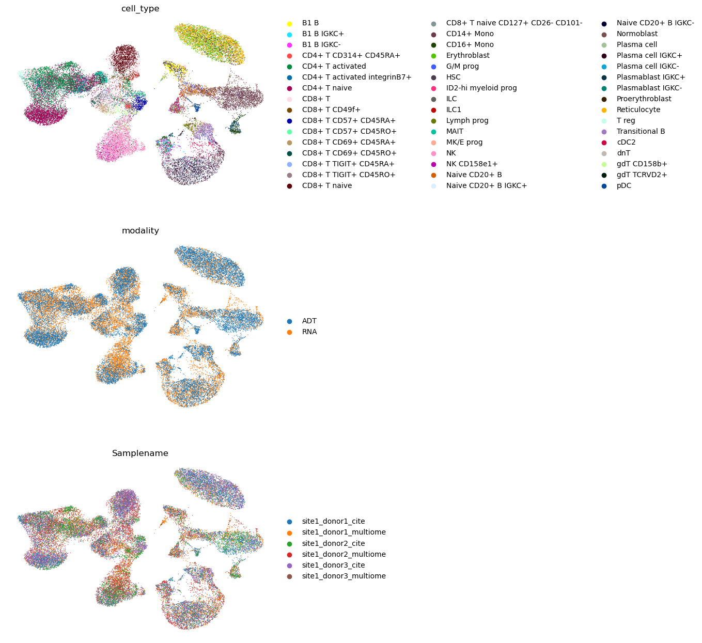
可以看到，各批次以及两种模态都得到了很好的整合。同样，也可以用 scIB 来评估这次整合。
45.5. 部分重叠数据的整合，以及用 totalVI 进行查询到参考的映射#
另一种多模态数据整合的情形，是当我们同时拥有配对和未配对数据时，例如一个 CITE-seq 数据集和一个 RNA-seq 数据集。这种情形也称为镶嵌式整合（mosaic integration）。我们可能希望把这些数据集映射到一个共享的潜在空间，以充分利用手头的所有数据。另一种用途是对缺失的模态进行插补（即为 RNA-seq 数据集推断蛋白丰度）。我们用 totalVI 来演示如何完成这两项任务：部分重叠整合和插补 [Gayoso et al., 2021].
我们把其中一个批次的蛋白计数设为 0，以模拟缺失的蛋白。这有助于稍后映射新的仅含 RNA 的查询。
adata = rna_cite.copy()
adata.obsm["protein_counts"] = adt_cite.layers["counts"].A.copy()
adata.obsm["protein_counts"][adata.obs["batch"] == "s1d3"] = 0.0
adata
AnnData object with n_obs × n_vars = 16294 × 4000
obs: 'GEX_n_genes_by_counts', 'GEX_pct_counts_mt', 'GEX_size_factors', 'GEX_phase', 'ADT_n_antibodies_by_counts', 'ADT_total_counts', 'ADT_iso_count', 'cell_type', 'batch', 'ADT_pseudotime_order', 'GEX_pseudotime_order', 'Samplename', 'Site', 'DonorNumber', 'Modality', 'VendorLot', 'DonorID', 'DonorAge', 'DonorBMI', 'DonorBloodType', 'DonorRace', 'Ethnicity', 'DonorGender', 'QCMeds', 'DonorSmoker', 'is_train', 'new_batch'
var: 'feature_types', 'gene_id', 'highly_variable', 'means', 'dispersions', 'dispersions_norm'
uns: 'dataset_id', 'genome', 'hvg', 'organism'
obsm: 'ADT_X_pca', 'ADT_X_umap', 'ADT_isotype_controls', 'GEX_X_pca', 'GEX_X_umap', 'protein_counts'
layers: 'counts'
接下来，我们设置 AnnData，指定模型参数并训练模型。
TOTALVI.setup_anndata(
adata,
layer="counts",
batch_key="batch",
protein_expression_obsm_key="protein_counts",
)
No GPU/TPU found, falling back to CPU. (Set TF_CPP_MIN_LOG_LEVEL=0 and rerun for more info.)
INFO Generating sequential column names
INFO Found batches with missing protein expression
arches_params = {
"use_layer_norm": "both",
"use_batch_norm": "none",
"n_layers_decoder": 2,
"n_layers_encoder": 2,
}
vae = TOTALVI(adata, **arches_params)
vae.train()
INFO Computing empirical prior initialization for protein background.
GPU available: True (cuda), used: True
TPU available: False, using: 0 TPU cores
IPU available: False, using: 0 IPUs
HPU available: False, using: 0 HPUs
LOCAL_RANK: 0 - CUDA_VISIBLE_DEVICES: [0]
Epoch 258/400: 64%|██████▍ | 258/400 [06:23<03:23, 1.43s/it, loss=709, v_num=1]Epoch 00258: reducing learning rate of group 0 to 2.4000e-03.
Epoch 381/400: 95%|█████████▌| 381/400 [09:23<00:27, 1.44s/it, loss=703, v_num=1]Epoch 00381: reducing learning rate of group 0 to 1.4400e-03.
Epoch 400/400: 100%|██████████| 400/400 [09:51<00:00, 1.44s/it, loss=710, v_num=1]
`Trainer.fit` stopped: `max_epochs=400` reached.
Epoch 400/400: 100%|██████████| 400/400 [09:51<00:00, 1.48s/it, loss=710, v_num=1]
现在，我们获得潜在表示并将其可视化。
adata.obsm["X_totalvi"] = vae.get_latent_representation()
sc.pp.neighbors(adata, use_rep="X_totalvi")
sc.tl.umap(adata)
sc.pl.umap(adata, color=["cell_type", "batch"], ncols=1, frameon=False)
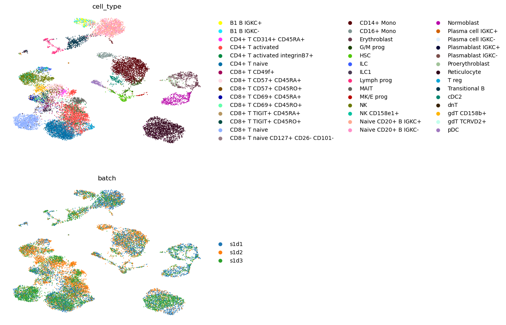
可以看到，各批次以及配对/仅 RNA 的数据都得到了很好的整合。
45.5.1. 查询到参考的映射#
现在，我们演示如何把新的单模态（仅 RNA）查询和多模态查询（CITE-seq）映射到上述参考上。
我们通过把两个批次之一的蛋白计数设为零，来模拟仅含 RNA 的查询。
query = rna_cite_query.copy()
query.obsm["protein_counts"] = adt_cite_query.layers["counts"].A.copy()
query.obsm["protein_counts"][query.obs["batch"] == "s2d4"] = 0.0
我们在 .obs 中创建一些额外的列，以便稍后进行可视化。
adata.obs["dataset_name"] = "Reference"
query.obs["dataset_name"] = "Query"
adata.obs["dataset_name_fine"] = "CITE reference"
adata.obs["dataset_name_fine"][adata.obs["batch"] == "s1d3"] = "RNA reference"
query.obs["dataset_name_fine"] = "CITE query"
query.obs["dataset_name_fine"][query.obs["batch"] == "s2d4"] = "RNA query"
接下来，我们更新和微调模型。
vae_q = TOTALVI.load_query_data(
query,
vae,
)
vae_q.train(
plan_kwargs={"weight_decay": 0.0, "scale_adversarial_loss": 0.0},
)
INFO Found batches with missing protein expression
INFO Computing empirical prior initialization for protein background.
GPU available: True (cuda), used: True
TPU available: False, using: 0 TPU cores
IPU available: False, using: 0 IPUs
HPU available: False, using: 0 HPUs
LOCAL_RANK: 0 - CUDA_VISIBLE_DEVICES: [0]
Epoch 233/400: 58%|█████▊ | 233/400 [05:32<03:54, 1.40s/it, loss=546, v_num=1]Epoch 00233: reducing learning rate of group 0 to 2.4000e-03.
Epoch 273/400: 68%|██████▊ | 273/400 [06:29<02:58, 1.40s/it, loss=548, v_num=1]Epoch 00273: reducing learning rate of group 0 to 1.4400e-03.
Epoch 287/400: 72%|███████▏ | 287/400 [06:49<02:41, 1.43s/it, loss=542, v_num=1]
Monitored metric elbo_validation did not improve in the last 45 records. Best score: 1102.225. Signaling Trainer to stop.
最后，我们获得查询的潜在表示，并把它与参考一起可视化。为此，我们把参考和查询拼接起来，重新计算邻居和 UMAP。
query.obsm["X_totalvi_scarches"] = vae_q.get_latent_representation(query)
adata.obsm["X_totalvi_scarches"] = adata.obsm["X_totalvi"]
full_data = adata.concatenate(query, batch_key="concat_batch")
full_data
AnnData object with n_obs × n_vars = 32340 × 4000
obs: 'GEX_n_genes_by_counts', 'GEX_pct_counts_mt', 'GEX_size_factors', 'GEX_phase', 'ADT_n_antibodies_by_counts', 'ADT_total_counts', 'ADT_iso_count', 'cell_type', 'batch', 'ADT_pseudotime_order', 'GEX_pseudotime_order', 'Samplename', 'Site', 'DonorNumber', 'Modality', 'VendorLot', 'DonorID', 'DonorAge', 'DonorBMI', 'DonorBloodType', 'DonorRace', 'Ethnicity', 'DonorGender', 'QCMeds', 'DonorSmoker', 'is_train', 'new_batch', '_scvi_labels', '_scvi_batch', 'dataset_name', 'dataset_name_fine', 'concat_batch'
var: 'feature_types', 'gene_id', 'highly_variable', 'means', 'dispersions', 'dispersions_norm'
obsm: 'ADT_X_pca', 'ADT_X_umap', 'ADT_isotype_controls', 'GEX_X_pca', 'GEX_X_umap', 'protein_counts', 'X_totalvi_scarches'
layers: 'counts'
sc.pp.neighbors(full_data, use_rep="X_totalvi_scarches")
sc.tl.umap(full_data)
sc.pl.umap(
full_data,
color=["cell_type", "batch", "dataset_name", "dataset_name_fine"],
ncols=1,
frameon=False,
)
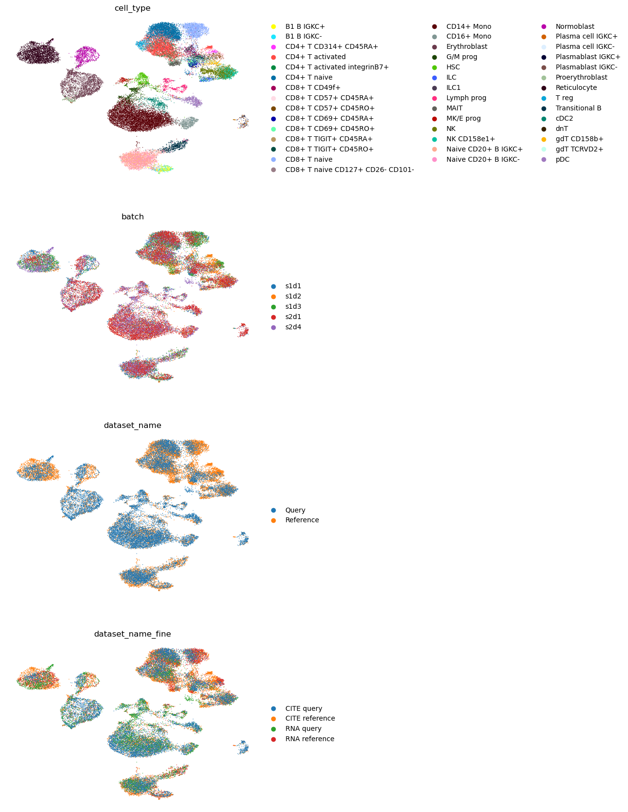
45.6. 用 Seurat 的 WNN 进行查询映射与插补#
Seurat v4 允许把新的 RNA-seq 查询映射到一个用加权最近邻（WNN）整合的多模态参考上 [Hao et al., 2021]。我们使用在配对整合笔记本中构建的那个参考。
该映射的原理是在查询与参考之间寻找锚点（anchor）。这种方法还允许把缺失的信息从参考传递到查询。这里，我们演示如何预测细胞类型，以及如何插补缺失的模态（本例中是蛋白丰度）。
需要注意，由于 Seurat v4 是一个 R 库，我们需要使用 anndata2ri 软件包（theislab/anndata2ri）将我们的所有数据从 Python 移动到 R。
首先，我们来看看我们的参考和查询。
%%R
ref <- readRDS(cite, file = "wnn_ref.rds")
ref
An object of class Seurat
4136 features across 16294 samples within 2 assays
Active assay: RNA (4000 features, 4000 variable features)
1 other assay present: ADT
4 dimensional reductions calculated: pca, harmony_pca, spca, wnn.umap
rna_cite_query
AnnData object with n_obs × n_vars = 16046 × 4000
obs: 'GEX_n_genes_by_counts', 'GEX_pct_counts_mt', 'GEX_size_factors', 'GEX_phase', 'ADT_n_antibodies_by_counts', 'ADT_total_counts', 'ADT_iso_count', 'cell_type', 'batch', 'ADT_pseudotime_order', 'GEX_pseudotime_order', 'Samplename', 'Site', 'DonorNumber', 'Modality', 'VendorLot', 'DonorID', 'DonorAge', 'DonorBMI', 'DonorBloodType', 'DonorRace', 'Ethnicity', 'DonorGender', 'QCMeds', 'DonorSmoker', 'is_train', 'new_batch'
var: 'feature_types', 'gene_id', 'highly_variable', 'means', 'dispersions', 'dispersions_norm'
uns: 'dataset_id', 'genome', 'hvg', 'organism'
obsm: 'ADT_X_pca', 'ADT_X_umap', 'ADT_isotype_controls', 'GEX_X_pca', 'GEX_X_umap'
layers: 'counts'
我们需要先预处理查询，因此使用 CLR 归一化计数来计算 PCA。
sc.pp.pca(rna_cite_query)
rna_cite_query
AnnData object with n_obs × n_vars = 16046 × 4000
obs: 'GEX_n_genes_by_counts', 'GEX_pct_counts_mt', 'GEX_size_factors', 'GEX_phase', 'ADT_n_antibodies_by_counts', 'ADT_total_counts', 'ADT_iso_count', 'cell_type', 'batch', 'ADT_pseudotime_order', 'GEX_pseudotime_order', 'Samplename', 'Site', 'DonorNumber', 'Modality', 'VendorLot', 'DonorID', 'DonorAge', 'DonorBMI', 'DonorBloodType', 'DonorRace', 'Ethnicity', 'DonorGender', 'QCMeds', 'DonorSmoker', 'is_train', 'new_batch'
var: 'feature_types', 'gene_id', 'highly_variable', 'means', 'dispersions', 'dispersions_norm'
uns: 'dataset_id', 'genome', 'hvg', 'organism', 'pca'
obsm: 'ADT_X_pca', 'ADT_X_umap', 'ADT_isotype_controls', 'GEX_X_pca', 'GEX_X_umap', 'X_pca'
varm: 'PCs'
layers: 'counts'
np.max(rna_cite_query.X)
9.061238
接下来，我们把查询从 Python 移到 R。
adata_ = sc.AnnData(rna_cite_query.X.copy())
adata_.obs_names = rna_cite_query.obs_names.copy()
adata_.var_names = rna_cite_query.var_names.copy()
adata_.obs["cell_type"] = rna_cite_query.obs["cell_type"].copy()
adata_.obs["batch"] = rna_cite_query.obs["batch"].copy()
adata_.obsm["X_pca"] = rna_cite_query.obsm["X_pca"].copy()
%%R -i adata_
query = as.Seurat(adata_, data='X', counts=NULL)
query
An object of class Seurat
4000 features across 16046 samples within 1 assay
Active assay: originalexp (4000 features, 0 variable features)
1 dimensional reduction calculated: PCA
现在，我们需要在参考和查询之间寻找锚点。我们指定希望使用来自参考的 sPCA 降维。
%%R
anchors <- FindTransferAnchors(
reference = ref,
query = query,
reference.reduction = "spca",
dims = 1:20
)
接下来，我们使用保存好的 UMAP 模型，把查询映射到参考上，以确保参考的 UMAP 投影保持不变、并把查询映射到其上。我们还进一步指定希望从参考向查询传递哪些信息 refdata 参数：在我们的例子中，我们想预测细胞类型和蛋白计数。
%%R
query <- MapQuery(
anchorset = anchors,
query = query,
reference = ref,
refdata = list(
cell_type = "cell_type",
predicted_ADT = "ADT"
),
reference.reduction = "spca",
reduction.model = "wnn.umap",
verbose=FALSE
)
下面我们把参考和查询一起可视化，并看看预测的细胞标签与真实标签的对比。
%%R
ref$id <- 'reference'
query$id <- 'query'
refquery <- merge(ref, query)
refquery[["umap"]] <- merge(ref[["wnn.umap"]], query[["ref.umap"]])
%%R
p1 <- DimPlot(refquery, reduction = "umap", group.by = "cell_type", label = TRUE, label.size = 3, repel = TRUE) + NoLegend()
p2 <- DimPlot(refquery, reduction = "umap", group.by = "predicted.cell_type", label = TRUE, label.size = 3, repel = TRUE) + NoLegend()
p1 + p2
Fontconfig warning: ignoring UTF-8: not a valid region tag
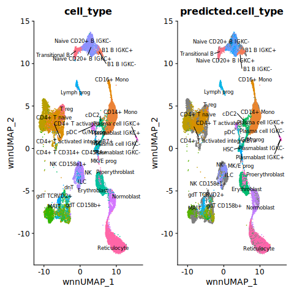
%%R
DimPlot(refquery, reduction = "umap", group.by = "id", label = TRUE, label.size = 3, repel = TRUE) + NoLegend()
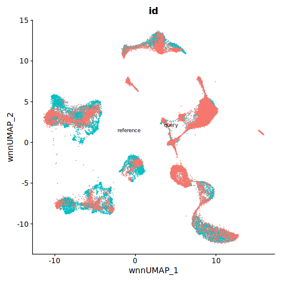
45.7. 通过桥接整合把 ADT 映射到 RNA 图谱上#
Bridge [Hao et al., 2022] 是一种把新模态映射到 RNA-seq 参考上的方法。为此，我们需要一个所谓的“桥（bridge）”数据集，它包含配对数据（RNA-seq 以及我们想要映射的新模态）。
由于我们想演示桥接功能，这里假设我们的参考只包含一个批次。如果需要把参考中的多个批次整合起来，请读者参阅整合教程（vignette）（https://satijalab.org/seurat/articles/integration_introduction.html）。我们用 CITE-seq 查询中的一个批次作为桥数据集，用 CITE-seq 查询中第二个批次的 ADT 模态作为真正的 ADT 查询。
首先，我们按上面所述把数据集分成参考、桥和查询。
rna_cite_ref = rna_cite[rna_cite.obs["batch"] == "s1d1"].copy()
rna_cite_bridge = rna_cite_query[rna_cite_query.obs["batch"] == "s2d1"].copy()
adt_cite_bridge = adt_cite_query[adt_cite_query.obs["donor"] == "s2d1"].copy()
adt_cite_query_bridge = adt_cite_query[adt_cite_query.obs["donor"] == "s2d4"].copy()
接下来，我们准备参考。我们把对象从 Python 移到 R，用 SCTransform 对数据做归一化，并计算 PCA。我们还计算 UMAP（并保留该模型），稍后用它来映射查询。
adata_ = sc.AnnData(rna_cite_ref.layers["counts"].A.copy())
adata_.obs_names = rna_cite_ref.obs_names.copy()
adata_.var_names = rna_cite_ref.var_names.copy()
adata_.obs["cell_type"] = rna_cite_ref.obs["cell_type"].copy()
%%R -i adata_
ref = as.Seurat(adata_, data=NULL, counts='X')
ref
An object of class Seurat
4000 features across 5219 samples within 1 assay
Active assay: originalexp (4000 features, 0 variable features)
%%R
ref <- RenameAssays(object = ref, originalexp = "RNA", verbose=FALSE)
ref <- SCTransform(ref, verbose=FALSE)
ref <- RunPCA(ref, verbose=FALSE)
ref <- RunUMAP(ref, dims = 1:50, return.model=TRUE, verbose=FALSE)
接下来，我们准备桥数据集。我们把 RNA 和 ADT 两个对象都移到 R，对 RNA 沿用与上面相同的归一化流程，对 ADT 计数进行 CLR 归一化并计算 PCA。
adata_ = sc.AnnData(adt_cite_bridge.layers["counts"].A.copy())
adata_.obs_names = adt_cite_bridge.obs_names.copy()
adata_.var_names = adt_cite_bridge.var_names.copy()
adata_.obs["cell_type"] = adt_cite_bridge.obs["cell_type"].copy()
adata_
AnnData object with n_obs × n_vars = 10465 × 136
obs: 'cell_type'
%%R -i adata_
adt <- as.Seurat(adata_, data=NULL, counts='X')
adata_ = sc.AnnData(rna_cite_bridge.layers["counts"].A.copy())
adata_.obs_names = rna_cite_bridge.obs_names.copy()
adata_.var_names = rna_cite_bridge.var_names.copy()
adata_.obs["cell_type"] = rna_cite_bridge.obs["cell_type"].copy()
%%R -i adata_
rna = as.Seurat(adata_, data=NULL, counts='X')
cite <- rna
cite <- RenameAssays(object = cite, originalexp = "RNA")
cite[["ADT"]] <- CreateAssayObject(counts = adt@assays$originalexp@data)
%%R
DefaultAssay(cite) <- "RNA"
VariableFeatures(cite) <- rownames(cite)
cite <- SCTransform(cite, verbose = FALSE)
%%R
DefaultAssay(cite) <- "ADT"
VariableFeatures(cite) <- rownames(cite)
cite <- NormalizeData(cite, normalization.method = 'CLR', margin = 2, verbose=FALSE)
cite <- ScaleData(cite, verbose=FALSE)
最后，我们用与上面的桥 ADT 相同的方式准备 ADT 查询。
adata_ = sc.AnnData(adt_cite_query_bridge.layers["counts"].A.copy())
adata_.obs_names = adt_cite_query_bridge.obs_names.copy()
adata_.var_names = adt_cite_query_bridge.var_names.copy()
adata_.obs["cell_type"] = adt_cite_query_bridge.obs["cell_type"].copy()
%%R -i adata_
query <- as.Seurat(adata_, data=NULL, counts='X')
query <- RenameAssays(object = query, originalexp = "ADT", verbose=FALSE)
VariableFeatures(query) <- rownames(query)
query <- NormalizeData(query, normalization.method = 'CLR', margin = 2, verbose=FALSE)
query <- ScaleData(query, verbose=FALSE)
query <- RunPCA(query, verbose=FALSE, reduction.name = 'apca')
现在，我们可以进行桥接整合。查询映射的最后一步与 Seurat v4 的查询映射相同，因此我们也可以为查询数据预测细胞类型。
%%R
dims.adt <- 1:50
dims.rna <- 1:50
DefaultAssay(cite) <- "RNA"
DefaultAssay(ref) <- "SCT"
obj.rna.ext <- PrepareBridgeReference(
reference = ref,
bridge = cite,
bridge.query.assay = "ADT",
reference.reduction = "pca",
reference.dims = dims.rna,
normalization.method = "SCT",
verbose = FALSE
)
| | 0 % ~calculating |++++++++++++++++++++++++++++++++++++++++++++++++++| 100% elapsed=00s
| | 0 % ~calculating |++++++++++++++++++++++++++++++++++++++++++++++++++| 100% elapsed=00s
%%R
bridge.anchor <- FindBridgeTransferAnchors(
extended.reference = obj.rna.ext,
query = query,
reduction = "pcaproject",
dims = dims.adt,
verbose = FALSE
)
| | 0 % ~calculating |++++++++++++++++++++++++++++++++++++++++++++++++++| 100% elapsed=00s
%%R
query <- MapQuery(
anchorset = bridge.anchor,
reference = ref,
query = query,
refdata = list(
cell_type = "cell_type"
),
reduction.model = "umap",
verbose = FALSE
)
让我们把结果可视化。
%%R
p1 <- DimPlot(query, group.by = "predicted.cell_type", reduction = "ref.umap", label = TRUE) + NoLegend()
p2 <- DimPlot(query, group.by = "cell_type", reduction = "ref.umap", label = TRUE) + NoLegend()
p1 + p2
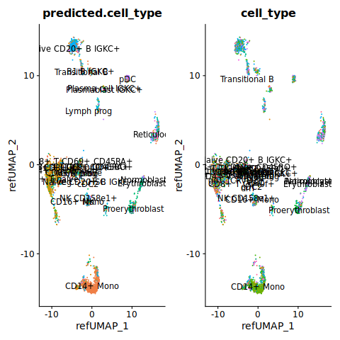
%%R
ref$id <- 'reference'
query$id <- 'query'
refquery <- merge(ref, query)
refquery[["umap"]] <- merge(ref[["umap"]], query[["ref.umap"]])
DimPlot(refquery, group.by = 'id', shuffle = TRUE)
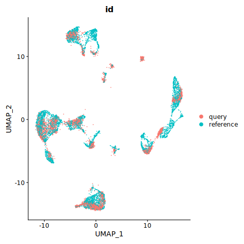
45.8. 用 multigrate 进行三模态整合与查询到参考的映射#
在最后一个例子中，我们将以 RNA、ATAC 和 ADT 作为三种模态，构建一个三模态参考图谱。multigrate [] 是一种基于条件自编码器的深度学习方法。来自每种模态的数据被送入各自独立的编码器，编码器输出边缘分布的参数，随后用专家乘积（product of experts，PoE）计算联合分布的参数 []。随后，条件解码器学习重建原始输入数据，同时校正批次效应。PoE 通过把相应的边缘分布设为无信息分布，使得即便某些模态缺失测量也能进行整合。multigrate 同样沿用 scArches [] 框架，从而支持对单模态和多模态查询进行查询到参考的映射。
45.8.1. 构建参考#
首先，我们加载数据，其中有 4000 个高变基因，它们分别是 CITE-seq 实验和 multiome 实验中 scRNA-seq 所共有的。
rna1 = sc.read(
"/lustre/groups/ml01/workspace/anastasia.litinetskaya/data/trimodal_neurips/rna_hvg_cite.h5ad"
)
rna1_ref = rna1[adt_cite.obs_names].copy()
rna1_query = rna1[adt_cite_query.obs_names].copy()
rna1_ref.shape, rna1_query.shape
((16294, 4000), (16046, 4000))
rna2 = sc.read(
"/lustre/groups/ml01/workspace/anastasia.litinetskaya/data/trimodal_neurips/rna_hvg_multiome.h5ad"
)
rna2_ref = rna2[atac_multiome.obs_names].copy()
rna2_query = rna2[atac_multiome_query.obs_names].copy()
rna2_ref.shape, rna2_query.shape
((17243, 4000), (10331, 4000))
接下来，我们把所有数据拼接到一个 AnnData 对象中，并指定数据如何配对、以及使用哪些层（layer）。
adata = mtg.data.organize_multiome_anndatas(
adatas=[[rna1_ref, rna2_ref], [None, atac_multiome], [adt_cite, None]],
layers=[["counts", "counts"], [None, "cpm"], [None, None]],
)
adata
AnnData object with n_obs × n_vars = 33537 × 24136
obs: 'GEX_n_genes_by_counts', 'GEX_pct_counts_mt', 'GEX_size_factors', 'GEX_phase', 'ADT_n_antibodies_by_counts', 'ADT_total_counts', 'ADT_iso_count', 'cell_type', 'batch', 'ADT_pseudotime_order', 'GEX_pseudotime_order', 'Samplename', 'Site', 'DonorNumber', 'Modality', 'VendorLot', 'DonorID', 'DonorAge', 'DonorBMI', 'DonorBloodType', 'DonorRace', 'Ethnicity', 'DonorGender', 'QCMeds', 'DonorSmoker', 'is_train', 'GEX_n_counts', 'GEX_n_genes', 'ATAC_nCount_peaks', 'ATAC_atac_fragments', 'ATAC_reads_in_peaks_frac', 'ATAC_blacklist_fraction', 'ATAC_nucleosome_signal', 'ATAC_pseudotime_order', 'technology', 'cell_type_l2', 'cell_type_l1', 'cell_type_l3', 'assay', 'split', 'group', 'balancing_weight', 'donor', 'log1p_n_genes_by_counts', 'log1p_total_counts', 'modality', 'n_counts', 'n_genes_by_counts', 'new_donor', 'outliers', 'total_counts', 'new_batch'
var: 'modality'
uns: 'modality_lengths'
layers: 'counts'
接下来，我们登记模型将在潜在空间中加以校正的协变量。
mtg.model.MultiVAE.setup_anndata(
adata,
categorical_covariate_keys=["Modality", "Samplename"],
rna_indices_end=4000,
)
接下来，我们初始化模型并训练它。
model = mtg.model.MultiVAE(
adata,
losses=["nb", "mse", "mse"],
loss_coefs={
"kl": 1e-3,
"integ": 10000,
},
integrate_on="Modality",
mmd="marginal",
)
model.train()
GPU available: True (cuda), used: True
TPU available: False, using: 0 TPU cores
IPU available: False, using: 0 IPUs
HPU available: False, using: 0 HPUs
LOCAL_RANK: 0 - CUDA_VISIBLE_DEVICES: [0]
Epoch 200/200: 100%|██████████| 200/200 [28:53<00:00, 8.43s/it, loss=2.34e+03, v_num=1]
`Trainer.fit` stopped: `max_epochs=200` reached.
Epoch 200/200: 100%|██████████| 200/200 [28:53<00:00, 8.67s/it, loss=2.34e+03, v_num=1]
最后，我们获得潜在表示，并把它显式保存在 .obsm['latent_ref'] （因为稍后我们会覆盖 .obsm['latent'] ——即在查询映射后用微调后的模型继续工作时），然后把结果可视化。
model.get_latent_representation()
adata.obsm["latent_ref"] = adata.obsm["latent"].copy()
adata
AnnData object with n_obs × n_vars = 33537 × 24136
obs: 'GEX_n_genes_by_counts', 'GEX_pct_counts_mt', 'GEX_size_factors', 'GEX_phase', 'ADT_n_antibodies_by_counts', 'ADT_total_counts', 'ADT_iso_count', 'cell_type', 'batch', 'ADT_pseudotime_order', 'GEX_pseudotime_order', 'Samplename', 'Site', 'DonorNumber', 'Modality', 'VendorLot', 'DonorID', 'DonorAge', 'DonorBMI', 'DonorBloodType', 'DonorRace', 'Ethnicity', 'DonorGender', 'QCMeds', 'DonorSmoker', 'is_train', 'GEX_n_counts', 'GEX_n_genes', 'ATAC_nCount_peaks', 'ATAC_atac_fragments', 'ATAC_reads_in_peaks_frac', 'ATAC_blacklist_fraction', 'ATAC_nucleosome_signal', 'ATAC_pseudotime_order', 'technology', 'cell_type_l2', 'cell_type_l1', 'cell_type_l3', 'assay', 'split', 'group', 'balancing_weight', 'donor', 'log1p_n_genes_by_counts', 'log1p_total_counts', 'modality', 'n_counts', 'n_genes_by_counts', 'new_donor', 'outliers', 'total_counts', 'new_batch', 'size_factors', '_scvi_batch'
var: 'modality'
uns: 'modality_lengths', '_scvi_uuid', '_scvi_manager_uuid'
obsm: '_scvi_extra_categorical_covs', 'latent', 'latent_ref'
layers: 'counts'
sc.pp.neighbors(adata, use_rep="latent")
sc.tl.umap(adata)
sc.pl.umap(adata, color=["cell_type", "Modality", "Samplename"], ncols=1, frameon=False)
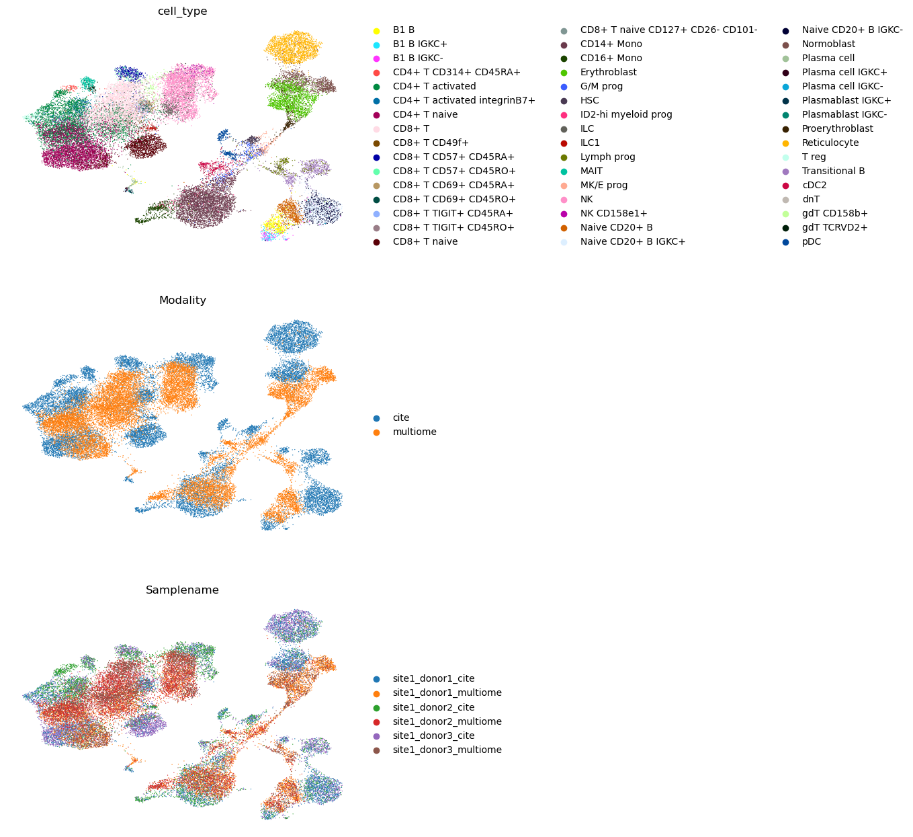
45.8.2. 查询三模态参考#
我们对查询的设置重复与前面参考相同的步骤。
query = mtg.data.organize_multiome_anndatas(
adatas=[
[rna1_query, rna2_query],
[None, atac_multiome_query],
[adt_cite_query, None],
],
layers=[["counts", "counts"], [None, "cpm"], [None, None]],
)
mtg.model.MultiVAE.setup_anndata(
query,
categorical_covariate_keys=["Modality", "Samplename"],
rna_indices_end=4000,
)
下面，我们通过把查询中一个 multiome 批次的 snRNA 部分和一个 CITE-seq 批次的 ADT 部分用零掩蔽，来模拟单模态查询。这样，我们分别得到一个仅含 ATAC 的查询批次和一个仅含 scRNA 的查询批次。
idx_atac_query = query.obs["Samplename"] == "site2_donor4_multiome"
idx_scrna_query = query.obs["Samplename"] == "site2_donor1_cite"
idx_mutiome_query = query.obs["Samplename"] == "site2_donor1_multiome"
idx_cite_query = query.obs["Samplename"] == "site2_donor4_cite"
(
np.sum(idx_atac_query),
np.sum(idx_scrna_query),
np.sum(idx_mutiome_query),
np.sum(idx_cite_query),
)
(6111, 10465, 4220, 5581)
query[idx_atac_query, :4000].X = 0
query[idx_scrna_query, 4000:].X = 0
我们通过为查询中的新批次添加新权重来更新模型，并对这些权重进行微调。
q_model = mtg.model.MultiVAE.load_query_data(query, model)
q_model.train(weight_decay=0)
GPU available: True (cuda), used: True
TPU available: False, using: 0 TPU cores
IPU available: False, using: 0 IPUs
HPU available: False, using: 0 HPUs
LOCAL_RANK: 0 - CUDA_VISIBLE_DEVICES: [0]
Epoch 200/200: 100%|██████████| 200/200 [16:13<00:00, 4.78s/it, loss=2.1e+03, v_num=1]
`Trainer.fit` stopped: `max_epochs=200` reached.
Epoch 200/200: 100%|██████████| 200/200 [16:13<00:00, 4.87s/it, loss=2.1e+03, v_num=1]
我们从更新后的模型中获得查询和参考的潜在表示。注意，除了一些采样噪声外，参考的表示与之前相同。
q_model.get_latent_representation(adata=query)
q_model.get_latent_representation(adata=adata)
INFO Input AnnData not setup with scvi-tools. attempting to transfer AnnData setup
最后，我们把参考和查询拼接起来，并在一个 UMAP 上同时可视化两者。
adata.obs["reference"] = "reference"
query.obs["reference"] = "query"
adata.obs["type_of_query"] = "reference"
query.obs.loc[idx_atac_query, "type_of_query"] = "ATAC query"
query.obs.loc[idx_scrna_query, "type_of_query"] = "scRNA query"
query.obs.loc[idx_mutiome_query, "type_of_query"] = "multiome query"
query.obs.loc[idx_cite_query, "type_of_query"] = "CITE-seq query"
adata_both = anndata.concat([adata, query])
sc.pp.neighbors(adata_both, use_rep="latent")
sc.tl.umap(adata_both)
sc.pl.umap(
adata_both,
color=["cell_type", "Modality", "Samplename", "reference"],
ncols=1,
frameon=False,
)
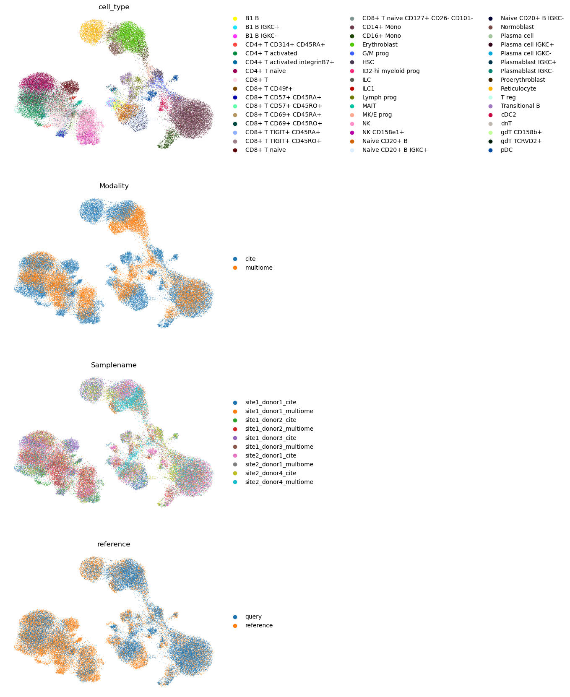
sc.pl.umap(
adata_both, color="type_of_query", ncols=1, frameon=False, groups=["ATAC query"]
)
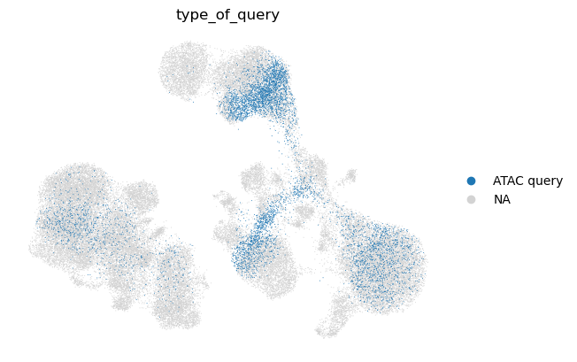
sc.pl.umap(
adata_both, color="type_of_query", ncols=1, frameon=False, groups=["CITE-seq query"]
)
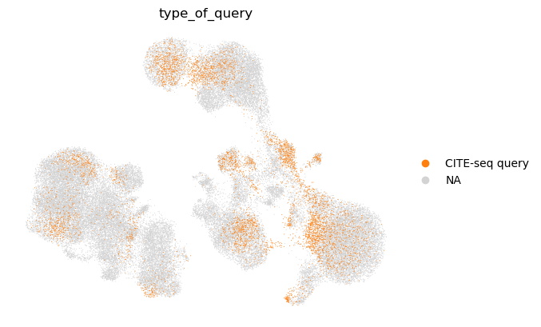
sc.pl.umap(
adata_both, color="type_of_query", ncols=1, frameon=False, groups=["multiome query"]
)
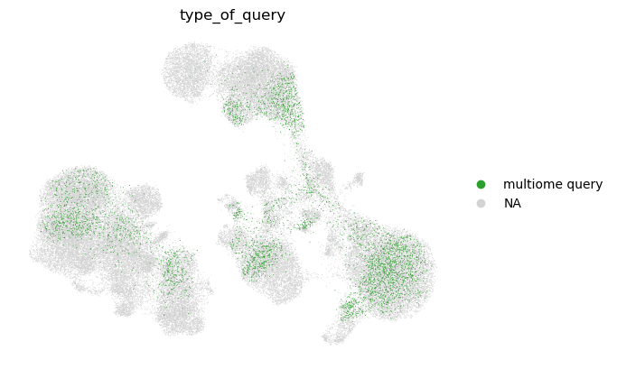
sc.pl.umap(
adata_both, color="type_of_query", ncols=1, frameon=False, groups=["scRNA query"]
)
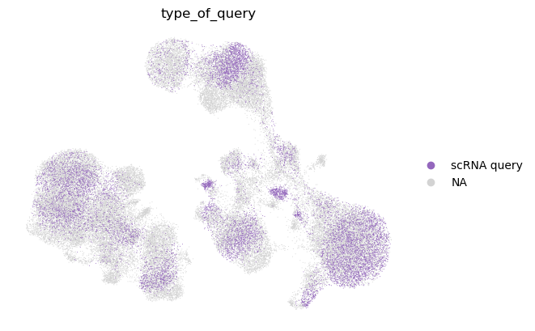
可以看到，查询的细胞类型被映射到参考中相应的细胞类型上。我们还注意到，即使参考中没有单模态数据，用 multigrate 也能进行单模态查询映射。
45.9. 会话信息#
%%R
sessionInfo()
R version 4.1.3 (2022-03-10)
Platform: x86_64-conda-linux-gnu (64-bit)
Running under: CentOS Linux 7 (Core)
Matrix products: default
BLAS/LAPACK: /lustre/groups/ml01/workspace/anastasia.litinetskaya/miniconda3/envs/advanced-integration/lib/libopenblasp-r0.3.21.so
locale:
[1] LC_CTYPE=C LC_NUMERIC=C
[3] LC_TIME=en_US.UTF-8 LC_COLLATE=en_US.UTF-8
[5] LC_MONETARY=en_US.UTF-8 LC_MESSAGES=en_US.UTF-8
[7] LC_PAPER=en_US.UTF-8 LC_NAME=C
[9] LC_ADDRESS=C LC_TELEPHONE=C
[11] LC_MEASUREMENT=en_US.UTF-8 LC_IDENTIFICATION=C
attached base packages:
[1] stats4 tools stats graphics grDevices utils datasets
[8] methods base
other attached packages:
[1] Matrix_1.5-3 SeuratObject_4.1.3
[3] Seurat_4.1.1.9001 SingleCellExperiment_1.16.0
[5] SummarizedExperiment_1.24.0 Biobase_2.54.0
[7] GenomicRanges_1.46.1 GenomeInfoDb_1.30.1
[9] IRanges_2.28.0 S4Vectors_0.32.4
[11] BiocGenerics_0.40.0 MatrixGenerics_1.6.0
[13] matrixStats_0.63.0
loaded via a namespace (and not attached):
[1] Rtsne_0.16 colorspace_2.0-3 deldir_1.0-6
[4] ellipsis_0.3.2 ggridges_0.5.4 XVector_0.34.0
[7] RcppHNSW_0.4.1 spatstat.data_3.0-0 farver_2.1.1
[10] leiden_0.4.3 listenv_0.9.0 ggrepel_0.9.2
[13] RSpectra_0.16-1 fansi_1.0.3 codetools_0.2-18
[16] splines_4.1.3 polyclip_1.10-4 jsonlite_1.8.4
[19] ica_1.0-3 cluster_2.1.4 png_0.1-8
[22] uwot_0.1.14 spatstat.sparse_3.0-0 shiny_1.7.4
[25] sctransform_0.3.5 compiler_4.1.3 httr_1.4.4
[28] fastmap_1.1.0 lazyeval_0.2.2 cli_3.5.0
[31] later_1.3.0 htmltools_0.5.4 igraph_1.3.5
[34] gtable_0.3.1 glue_1.6.2 GenomeInfoDbData_1.2.7
[37] RANN_2.6.1 reshape2_1.4.4 dplyr_1.0.10
[40] Rcpp_1.0.9 scattermore_0.8 vctrs_0.5.1
[43] nlme_3.1-161 progressr_0.12.0 lmtest_0.9-40
[46] spatstat.random_3.0-1 stringr_1.5.0 globals_0.16.2
[49] mime_0.12 miniUI_0.1.1.1 lifecycle_1.0.3
[52] irlba_2.3.5.1 goftest_1.2-3 future_1.30.0
[55] zlibbioc_1.40.0 MASS_7.3-58.1 zoo_1.8-11
[58] scales_1.2.1 spatstat.core_2.4-4 promises_1.2.0.1
[61] spatstat.utils_3.0-1 parallel_4.1.3 RColorBrewer_1.1-3
[64] reticulate_1.26 pbapply_1.6-0 gridExtra_2.3
[67] ggplot2_3.4.0 rpart_4.1.19 stringi_1.7.8
[70] fastDummies_1.6.3 rlang_1.0.6 pkgconfig_2.0.3
[73] bitops_1.0-7 lattice_0.20-45 tensor_1.5
[76] ROCR_1.0-11 purrr_1.0.0 labeling_0.4.2
[79] patchwork_1.1.2 htmlwidgets_1.6.0 cowplot_1.1.1
[82] tidyselect_1.2.0 parallelly_1.33.0 RcppAnnoy_0.0.20
[85] plyr_1.8.8 magrittr_2.0.3 R6_2.5.1
[88] generics_0.1.3 DelayedArray_0.20.0 withr_2.5.0
[91] mgcv_1.8-41 pillar_1.8.1 fitdistrplus_1.1-8
[94] abind_1.4-5 survival_3.4-0 RCurl_1.98-1.9
[97] sp_1.5-1 tibble_3.1.8 future.apply_1.10.0
[100] crayon_1.5.2 KernSmooth_2.23-20 utf8_1.2.2
[103] spatstat.geom_3.0-3 plotly_4.10.1 grid_4.1.3
[106] data.table_1.14.6 digest_0.6.31 xtable_1.8-4
[109] tidyr_1.2.1 httpuv_1.6.7 munsell_0.5.0
[112] viridisLite_0.4.1
45.10. 参考文献#
Zhi-Jie Cao and Ge Gao. Multi-omics single-cell data integration and regulatory inference with graph-linked embedding. Nature Biotechnology, May 2022. URL: https://doi.org/10.1038/s41587-022-01284-4, doi:10.1038/s41587-022-01284-4.
Adam Gayoso, Zoë Steier, Romain Lopez, Jeffrey Regier, Kristopher L. Nazor, Aaron Streets, and Nir Yosef. Joint probabilistic modeling of single-cell multi-omic data with totalvi. Nature Methods, 18(3):272–282, Mar 2021. URL: https://doi.org/10.1038/s41592-020-01050-x, doi:10.1038/s41592-020-01050-x.
Yuhan Hao, Stephanie Hao, Erica Andersen-Nissen, William M. Mauck, Shiwei Zheng, Andrew Butler, Maddie J. Lee, Aaron J. Wilk, Charlotte Darby, Michael Zager, Paul Hoffman, Marlon Stoeckius, Efthymia Papalexi, Eleni P. Mimitou, Jaison Jain, Avi Srivastava, Tim Stuart, Lamar M. Fleming, Bertrand Yeung, Angela J. Rogers, Juliana M. McElrath, Catherine A. Blish, Raphael Gottardo, Peter Smibert, and Rahul Satija. Integrated analysis of multimodal single-cell data. Cell, 184(13):3573–3587.e29, 2021. URL: https://www.sciencedirect.com/science/article/pii/S0092867421005833, doi:https://doi.org/10.1016/j.cell.2021.04.048.
Yuhan Hao, Tim Stuart, Madeline Kowalski, Saket Choudhary, Paul Hoffman, Austin Hartman, Avi Srivastava, Gesmira Molla, Shaista Madad, Carlos Fernandez-Granda, and Rahul Satija. Dictionary learning for integrative, multimodal, and scalable single-cell analysis. bioRxiv, 2022. URL: https://www.biorxiv.org/content/early/2022/02/26/2022.02.24.481684, arXiv:https://www.biorxiv.org/content/early/2022/02/26/2022.02.24.481684.full.pdf, doi:10.1101/2022.02.24.481684.
Malte D Luecken, Daniel Bernard Burkhardt, Robrecht Cannoodt, Christopher Lance, Aditi Agrawal, Hananeh Aliee, Ann T Chen, Louise Deconinck, Angela M Detweiler, Alejandro A Granados, Shelly Huynh, Laura Isacco, Yang Joon Kim, Dominik Klein, BONY DE KUMAR, Sunil Kuppasani, Heiko Lickert, Aaron McGeever, Honey Mekonen, Joaquin Caceres Melgarejo, Maurizio Morri, Michaela Müller, Norma Neff, Sheryl Paul, Bastian Rieck, Kaylie Schneider, Scott Steelman, Michael Sterr, Daniel J. Treacy, Alexander Tong, Alexandra-Chloe Villani, Guilin Wang, Jia Yan, Ce Zhang, Angela Oliveira Pisco, Smita Krishnaswamy, Fabian J Theis, and Jonathan M. Bloom. A sandbox for prediction and integration of dna, rna, and proteins in single cells. In Thirty-fifth Conference on Neural Information Processing Systems Datasets and Benchmarks Track (Round 2). 2021. URL: https://openreview.net/forum?id=gN35BGa1Rt.
45.11. 贡献者#
我们衷心感谢以下人员的贡献：
45.11.2. 审阅者#
Lukas Heumos